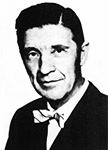

Karl Hjalmar Fahlgren
Teol Dr, präst, lektor, rektor, redaktör och författare. Blev 72 år.
| Född: | 1900-12-21 Varuträsk 3, Skellefteå lfs, Skellefteå sn. [1] | |
|---|
| Levde: | 1910 Varuträsk 3, Norrgården, Skellefteå sn. [2] | |
|---|
| Värnplikt: | 1920 Varuträsk 3, Norrgården, Skellefteå sn. [3] | Inskr. Vpl 707 71/1920. |
|---|
| Utbildad: | 1921-08 Uppsala, Uppsala domkyrko fs, Uppsala stad. [3] | Höstterminen 1921 inträde vid Fjellstedtska skolan i Uppsala |
|---|
| Utbildad: | 1924-02-11 Uppsala, Uppsala domkyrko fs, Uppsala stad. [3] | 4:e ringen. |
|---|
| Död: | 1973-12-18 Kungsg 115, Umeå, Umeå sfs, Umeå kn. [4] | |
|---|
| Vigsel: | 1928-07-01. [4] |
|---|
| Levde: | 1971 Kungsg 115, Umeå, Umeå sfs, Umeå kn. [5] |
|---|
Noteringar
Karl Fahlgren var född i Skellefteå år 1900. Han blev teologie doktor i Uppsala 1932 och fil, kand. 1937. Efter att en tid ha verkat som präst i Luleå stift och därefter som lektor i bl, a, Kalmar och Visby, blev han 1943 rektor vid folkhögskoleseminariet i Umeå. Karl Fahlgren dog i december 1973.
I det här sammanhanget är hans insats som hembygdsforskare av störst intresse. Före kommunsammanslagningarna har han som just sådan gjort en stor insats. På uppdrag av olika kommuners fullmäktige har han redigerat en rad historiker om skilda norrlandssocknar. Till 100 årsjubileet 1945 skrev han Skellefteå stads historia, där han allsidigt skildrar de olika sidorna av stadens verksamhet. Han utgav därefter också Skellefteå sockens historia, där han uppehåller sig vid väsentliga händelser och personer i bygdens historia., i kapitlet om landsmöten, landsting och häradsting visar han, hur häxprocesserna på 1600 talet härjade i Västerbotten. Från 1700 talet finns en givande skildring av Skellefteprosten Högström, som invaldes i Kungl. Vetenskapsakademien och var synnerligen intresserad av att eliminera frostskador på raid. Tillsammans med två andra, B Medin och E. Westerlund, skildrar Karl Fahlgren hur svensk ryska kriget 1808-09 drabbade folket i Västerbotten. Minnet av "ryssen" var länge levande i bygden!
Andra betydande sockenhistoriker är Åsele socken (1966) Bygdeå sockens historia (1963), Umeå sockens historia (1970) och Blad ur Sävar sockens historia (1973). Karl Fahlgren har vid sidan av att vara redaktör i dem alla lämnat väsentliga bidrag om gångna tiders förhållanden, om jordbruk och jakt likaväl som om socialvård och hälsovård. Även den andliga odlingen lämnas stort utrymme. Överhuvudtaget har Karl Fahlgren sökt att täcka all väsentlig verksamhet inom de olika socknarnas område.
Karl Fahlgren var väl medveten om de svåra problem, som utgivningen av städers och socknars historia ställer. Det framgår i förordet till Umeå socken historia. Han ställer där frågan: "Vad skall det stå i en sockens historia?" Han besvarar frågan med att förkasta uppfattningen, att det enbart räcker med vetenskapliga diskussioner och allmänna slutsatser väl belagda i en utförlig notapparat, där källmaterialet noga redovisas. Han menade, att det var minst lika viktigt att nå ut till läsekretsen och därför ge rum åt det personliga, berättande stoffet. Det är en svår konst, som emellertid Karl Fahlgren behärskade i ovanligt hög grad.
Det är både från kulturell och vetenskaplig ståndpunkt en bestående insats som Karl Fahlgren gjort som Norrlandsforskare.
Bertil Pettersson
Ur boken "Västerbotten 1974 nr: 1"
Böcker som Karl Fahlgren har skrivit:
Skellefteå sockens historia I: 1-2, Uppsala 1953-56. 455+376 s. Grå dekorerade helklotband.
Hädare och kättare i Norrland under vår stormaktstid. Limhäftad. Bokförlaget Botnia 1969. 260 gram. 117 sidor.
Skellefteå sockens historia, I- I:2 (a.u) Socknens kommunalfullmäktige / K. Fahlgren. 1 uppl. 1953 resp. 1956. 455 + 370 s. Dekorerade klotband. 2 volymer.
Till Blåkulla, 1966
Personhistoria
| Årtal | Ålder | Händelse |
|---|
| 1900 |
|
Födelse 1900-12-21 Varuträsk 3, Skellefteå lfs, Skellefteå sn [1] |
| 1903 |
2 år |
Systern Alice Maria Fredrika Fahlgren föds 1903-07-25 Varuträsk 3, Norrgården, Skellefteå sn [2] |
| 1905 |
4 år |
Makan Sigrid Anna Maria Elisabet Högström föds 1905-07-16 Luleå, Luleå domkyrko fs, Luleå stad [6] |
| 1906 |
5 år |
Systern Elin Viktoria Fahlgren föds 1906-05-24 Varuträsk 3, Norrgården, Skellefteå sn [2] |
| 1909 |
8 år |
Brodern Sven Valfrid Fahlgren föds 1909-01-03 Varuträsk 3, Norrgården, Skellefteå sn [2] |
| 1910 |
|
Levde 1910 Varuträsk 3, Norrgården, Skellefteå sn [2] |
| 1911 |
10 år |
Brodern Gunnar Emanuel Fahlgren föds 1911-09-02 Varuträsk 3, Norrgården, Skellefteå sn [3] |
| 1912 |
11 år |
Brodern Gunnar Emanuel Fahlgren dör 1912-03-28 Varuträsk 3, Norrgården, Skellefteå sn [3] |
| 1914 |
13 år |
Systern Anna Alida Fahlgren föds 1914-10-25 Varuträsk 3, Norrgården, Skellefteå sn [3] |
| 1920 |
|
Värnplikt 1920 Varuträsk 3, Norrgården, Skellefteå sn [3] |
| 1921 |
|
Utbildning 1921-08 Uppsala, Uppsala domkyrko fs, Uppsala stad [3] |
| 1924 |
23 år |
Utbildning 1924-02-11 Uppsala, Uppsala domkyrko fs, Uppsala stad [3] |
| 1928 |
27 år |
Vigsel Sigrid Anna Maria Elisabet Högström 1928-07-01 [4] |
| 1938 |
37 år |
Modern Maria Sofia Hansson dör 1938-11-24 Varuträsk, Skellefteå lfs, Skellefteå sn [7] |
| 1943 |
42 år |
Brodern Sven Valfrid Fahlgren dör 1943-01-27 Varuträsk, Skellefteå lfs, Skellefteå sn |
| 1956 |
55 år |
Fadern Erik Hjalmar Fahlgren dör 1956-01-24 Lund, Skellefteå lfs, Skellefteå sn [8] |
| 1971 |
|
Levde Sigrid Anna Maria Elisabet Högström 1971 Kungsg 115, Umeå, Umeå sfs, Umeå kn [5] |
| 1973 |
72 år |
Död 1973-12-18 Kungsg 115, Umeå, Umeå sfs, Umeå kn [4] |
Dokument
Källor
| [1] | SCB Födda Skellefteå lfs 621/1900, Skellefteå lfs AIIA:3 (1900-1910) fol. 22 |
| |
| | |
| [2] | Skellefteå lfs AIIA:3 (1900-1910) fol. 22 |
| |
| | |
| [3] | Skellefteå lfs AIIA:14 (1912-1926) fol. 24 |
| |
| | |
| [4] | Mtl 71 / RTB 74 |
| |
| | |
| [5] | Mtl Västerbottens län 1971 |
| |
| | |
| [6] | Luleå domkyrkoförs C:10 (1903-1910) 244/1905 fol. 89, AIIA:7 (1900-1910) fol. 1504 |
| |
| | |
| [7] | SCB Döda AC Skellefteå lfs |
| |
| | |
| [8] | DB / DOR 52-60 |
| |
|
|  |
| Karl Fahlgren (1900-1973), Teol. Dr, rektor, redaktör och författare. |
|
{kind=link}